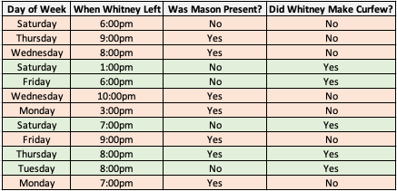
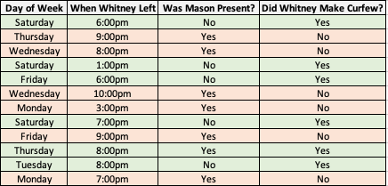
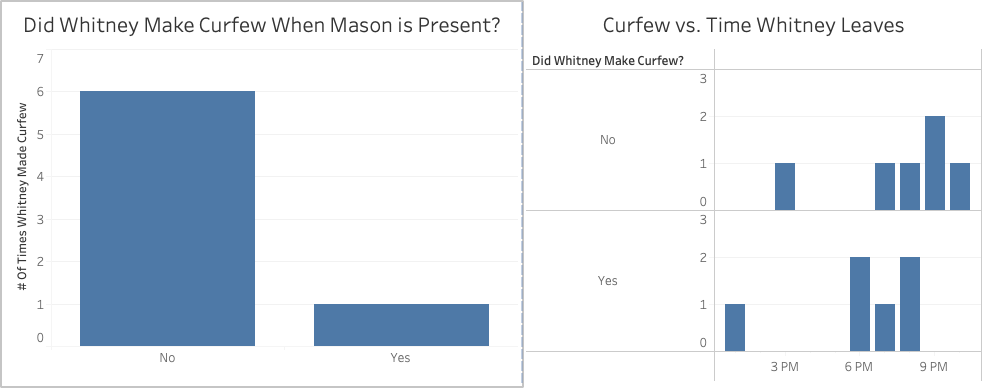

For Mom
A blog written primarily for my mother so she can see and hear about the cool things I'm learning,
without any the confusing data science jargin.
The Data Science Process: What do Data Scientists even do?
What would you do differently if you knew whether your teenager would come home on time before they even left,
or if you knew that your child was on track to be the leader of the Downtown Salt Lake City Mafia by age 30?
As a mom with this kind of information, you could sure make a heck of a difference, and probably spare yourself
a lot of grief and stress in the long run. Businesses have a similar mindset about the welfare of their finances,
and they’re willing to pay big bucks if someone can rub a crystal ball and show them the future if it will help their business thrive.
Although I think ‘wizard’ is a more appropriate title for people who actually do this for businesses, the world has chosen the term ‘Data Scientist.’ Data Scientists are responsible for helping businesses grow and improve, but nobody really knows how they do that, except that they probably use data along the way. Today I hope to explain what Data Scientists do by comparing it to how our brains help us make decisions.
Data Scientists encounter unpredictable problems, each presenting unique challenges. Despite the variability, the approach to solving these issues parallels the way we make everyday decisions. We can break this process down into the following steps:
Identifying the Problem
Collecting the Data
Cleaning the Data
Exploring the Data
Modeling the Data
Deployment
If you didn’t understand what any of that meant, that’s okay, we’re going to walk through it.
 You most likely didn’t calculate these numbers when you were deciding what to do, but you probably recognized that there was low chance that Whitney would come home
on time if Mason were there and it if were late in the evening. Data Scientists spend lots of time trying different methods of creating probabilities, and testing their accuracy on
events that have already occurred but weren’t used to make the probabilities. This gives them a glimpse into how well their ideas would work in in a real setting when
they are predicting future events.
You most likely didn’t calculate these numbers when you were deciding what to do, but you probably recognized that there was low chance that Whitney would come home
on time if Mason were there and it if were late in the evening. Data Scientists spend lots of time trying different methods of creating probabilities, and testing their accuracy on
events that have already occurred but weren’t used to make the probabilities. This gives them a glimpse into how well their ideas would work in in a real setting when
they are predicting future events.
The second reason is because Data Science is really good at automating human tasks, since both our brains and Data Science both operate using probabilities, which can save a bunch of labor and reduce the amount of monotonous tasks we have to do. For example, Data Science is responsible for Chat GPT helpful and human like responses, boosting productivity and saving money in many businesses today.
Hopefully the concept of Data Science doesn’t seem so foreign anymore, and you can see why it has become a popular discipline in the past decade. In our increasingly data-driven world, understanding the basics of Data Science is becoming essential for everyone. Stay curious, explore data tools and resources available online, and empower yourself with the insights that data can provide. Start small, and you'll be amazed at how understanding data can open new doors and broaden your perspectives. Remember, you don't need to be a data scientist to benefit from the power of data – it's for everyone!
Although I think ‘wizard’ is a more appropriate title for people who actually do this for businesses, the world has chosen the term ‘Data Scientist.’ Data Scientists are responsible for helping businesses grow and improve, but nobody really knows how they do that, except that they probably use data along the way. Today I hope to explain what Data Scientists do by comparing it to how our brains help us make decisions.
Data Scientists encounter unpredictable problems, each presenting unique challenges. Despite the variability, the approach to solving these issues parallels the way we make everyday decisions. We can break this process down into the following steps:
If you didn’t understand what any of that meant, that’s okay, we’re going to walk through it.
Identifying the Problem
Suppose you have a teenage daughter, Whitney, who loves to hang out with her friends, but hasn’t been obedient to your curfew recently. Whitney just told you that she plans to go out with some friends tonight. She said she’s gonna leave at 10:00pm—AND, yep, that’s right, Mason, her boyfriend, is gonna be there. Ugh! Is she gonna make it back before curfew? You don’t want to wait up all night for her, or worse, have something bad happen to her. Data Scientists seek to identify problems like this within businesses that could potentially be solved using data.Collecting Data
Immediately you start remembering all the times she’s ever left the house. This happens in an instant in our heads, but for data scientists, gathering all the relevant information to attack the problem requires research and time. Your brain probably came up with something like this:
Wrangling and Cleaning Data
“Whitney, you have been late for curfew the last three times you’ve hung out with friends!” You tell her confidently. “That’s not true! I came home early last night! You never remember the times that I’m actually home on time!” You double check your memory and she’s right. She was home early last night. Data Scientists rarely find perfectly clean and accurate data to work with, lots of time goes in to cleaning and validating it. After realizing your mistake, now your memory looks like this:
Exploratory Data Analysis
You’ve got a lot to think about. Remember that bad feeling you got when you realized that Mason, her boyfriend, was going to be there? It looks like she’s rarely home on time when Mason’s there! You also recognize that she usually doesn’t come home on time when she leaves late at night. Data Scientists look for key information like this in their data that might help them answer their questions. They do this by constructing graphs, running tests, and restructuring the data.
Modeling
Now that you’ve identified Whitney’s bad track record, your brain comes up with probabilities that Whitney comes home on time for these scenarios. Because these probabilities are based on your current knowledge, they may not be perfect, but we assume that they’ll still help us make a good decision.Deployment
You’re confident that she’s not going to make curfew. Time to use this masterpiece you’ve just created during those few seconds of quick thinking: “Whitney, you’re not going out tonight.” Whitney is sad, throws a tantrum, and then rushes to her room where we hope she’ll think about the consequences of her actions. What did Data Science do for you? Data Science allowed you to get a good night’s rest while your daughter is safe at home. Once a Data Scientist is confident that their model will help solve the problem, they ‘deploy’ it so the businesses can use it to make informed decisions.That seems really easy. Why are data scientists needed to do this?
There are a couple reasons for this. The first being that many problems are significantly more complex than this and require the use of computers to process the absurd amount of data required to get a good prediction. Have you ever gotten an ad on your phone for something you were talking about 5 minutes ago? Data Science. Do you think you could manually send ad’s to people’s devices with that kind of accuracy? Probably not.The second reason is because Data Science is really good at automating human tasks, since both our brains and Data Science both operate using probabilities, which can save a bunch of labor and reduce the amount of monotonous tasks we have to do. For example, Data Science is responsible for Chat GPT helpful and human like responses, boosting productivity and saving money in many businesses today.
Hopefully the concept of Data Science doesn’t seem so foreign anymore, and you can see why it has become a popular discipline in the past decade. In our increasingly data-driven world, understanding the basics of Data Science is becoming essential for everyone. Stay curious, explore data tools and resources available online, and empower yourself with the insights that data can provide. Start small, and you'll be amazed at how understanding data can open new doors and broaden your perspectives. Remember, you don't need to be a data scientist to benefit from the power of data – it's for everyone!